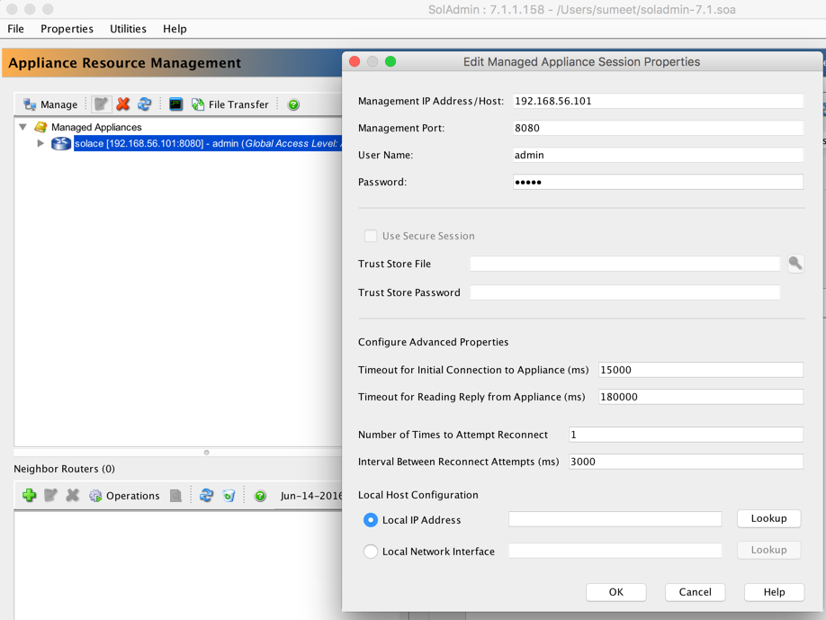
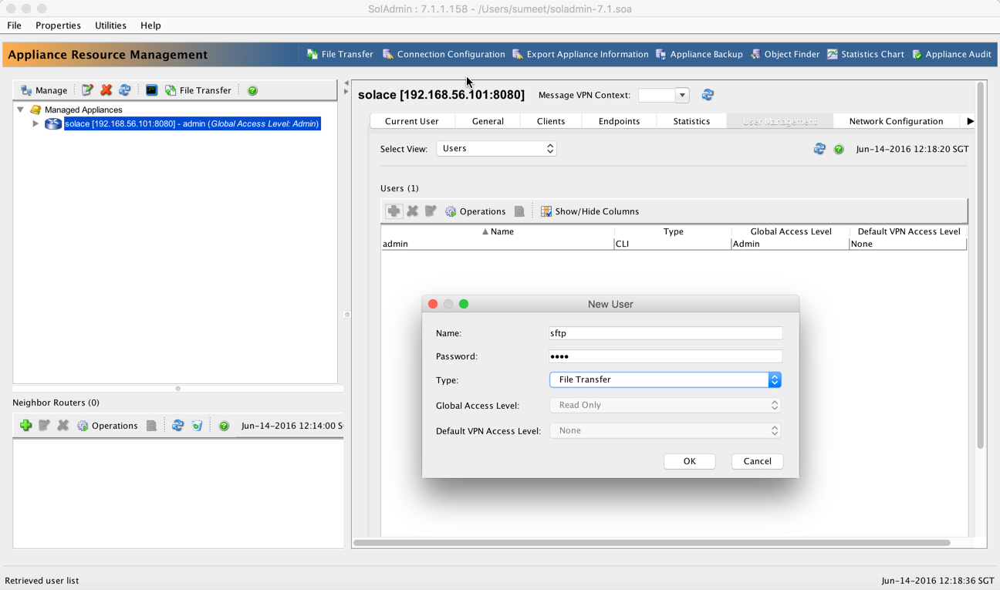
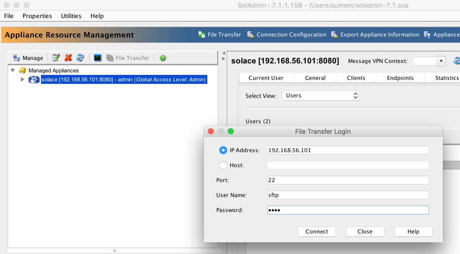
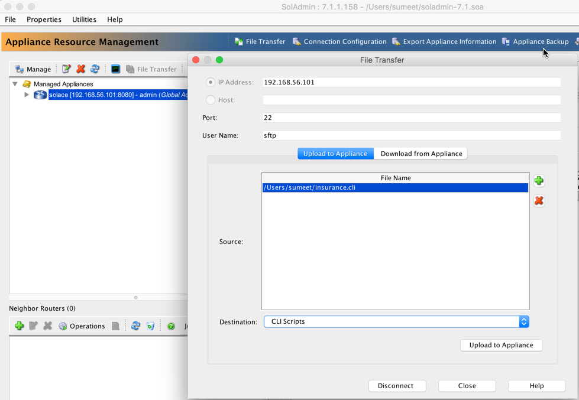
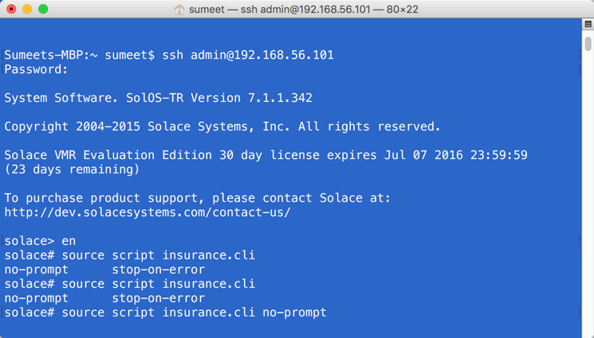

Insurance Agent Mobile App Demo
Download, Install & Run this demo on my machine
-
Download VMR (Virtual Message Router), SolAdmin & its Release Notes
-
Install/run VMR and SolAdmin as per the instructions in the release notes.
-
Create VPN (Partition) in Solace VMR Download CLI Script for VPN creation
- import this script in VMR as described below.
- Run SolAdmin
- Add newly deployed running VMR in Solace as managed apliance
 - Launch CLI

- Login in CLI

- Create File Transfer User
 - Launch File transfer

- File Transfer Login
 - Upload CLI Script in VMR
 - Execute CLI Script
 - Confirm the VPN has been created successfully

-
Download and deploy the DB script
Make sure you update the DB config under source/main/resources/META-INF/spring/routes_config.xml file as needed
<bean id=“dataSource” class=“org.apache.commons.dbcp.BasicDataSource” destroy-method=“close”> <property name="driverClassName" value="com.mysql.jdbc.Driver"/> <property name="url" value="jdbc:mysql://localhost:3306/insurance"/> <property name="username" value="fuse_app"/> <property name="password" value="solace1"/> </bean> -
Deploy Fuse App under Fuse deploy folder
Make sure you change the Solace VMR IP to point to your VMR IP under
source/main/resources/META-INF/spring/routes_config.xml file.<property name=“environment”> <map> <entry key=“java.naming.provider.url” value=“smf://52.76.29.143” /> <entry key=“java.naming.factory.initial” value=“com.solacesystems.jndi.SolJNDIInitialContextFactory” /> <entry key=“java.naming.security.credentials” value=“password” /> <entry key=“java.naming.security.principal” value=“ins_user” /> <entry key=“Solace_JMS_VPN” value=“insurance” /> </map> </property> -
Start Fuse
Make the changes as suugested in the images below in rest.js file under insurance/res/sol/